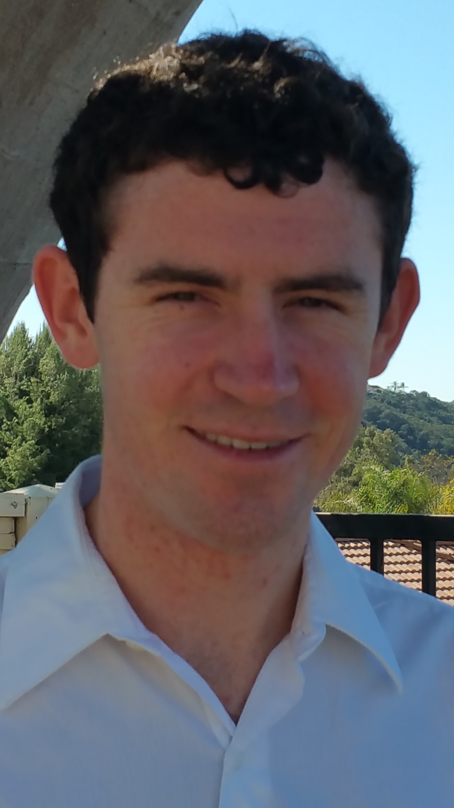

Hello, my name is Gavin Mack. I am a game designer and programmer, and a recent graduate of UC Santa Cruz with a BS in Computer Science: Computer Game Design and minor in Education.
I've had a passion for gaming ever since I was a child, growing up with classic titles such as Oregon Trail and Pajama Sam. I built my first computer when I was 16 so that I would have something more powerful (and cost-effective) to game on. Today, my interests lie more around game development and software engineering. I love all kinds of game development, but I am especially passionate about educational games.
I currently live in San Diego, CA, spending most of my time either job hunting or working on one of several side projects. The project which currently has my attention is a Twine serious game meant to illustrate the school-to-prison pipeline. If you are interested in collaborating on a project feel free to email me!
Email: gavinmmack@gmail.com